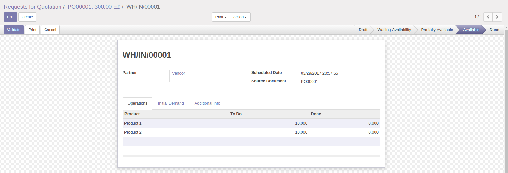
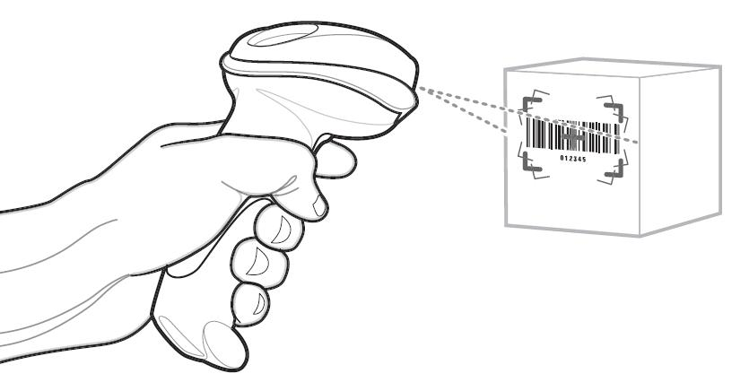

Manage and Control stocks with less human mistakes with Barcode

Receive shipments using barcode
Make it Fast and Accurate

This module helps you use the barcode scanner to receive or deliver shipment.
This module works on Picking page without any pre-configuration, Just install the module and enjoy it.
Provided by: arodoo.com